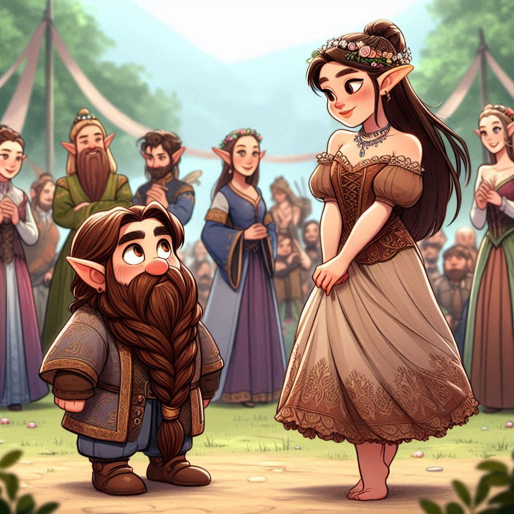

The sun dips low, casting a golden hue over the shimmering pavilions
of the Dancing Elves' Festival. Jimli stands at the edge, his heart
pounding with a mix of excitement and nerves. The moment has finally
come —the dancing contest is about to begin!
An elven organizer announces that all candidates should line up to
be randomly paired for the contest. Jimli swallows hard, feeling a
knot of anxiety in his stomach. This is his very first dancing
contest, and he's never danced with an elf before!
Soon, Jimli finds himself paired with a stunningly beautiful young
elf with long, silver hair that catches the light. She smiles
warmly. "My name is Elowen," she says, her voice as soft as a
whispering breeze. Jimli's throat goes dry as he introduces himself,
his usual dwarven confidence slipping away in the face of such
ethereal beauty.
"We have two songs to practice before the contest begins," Elowen
says, her smile growing wider. "But before we start, how about a
little quiz? It's important we understand each other if we're going
to make a good impression on the judges." Jimli nods, though his
mind is racing. Dancing with an elf was one thing, but now there's a
quiz?
He swallows hard and chuckles nervously. "Well, I
can tell you one thing, Lady Elowen. I may not know much about elven
customs, but I can promise you this: I've got two left feet, and
both of them are dwarven!"
Elowen giggles, her laughter like the tinkling of silver bells.
"Don't worry, Master Dwarf. I'm sure your feet will do just fine —as
long as they stay on the ground! Let's see how well you know your
elven lore. A good connection can make all the difference in
impressing the judges!"
Jimli takes a deep breath,
determined to prove himself, not just on the dance floor, but in
this unexpected test of knowledge. With a grin, he readies himself
for the challenge.